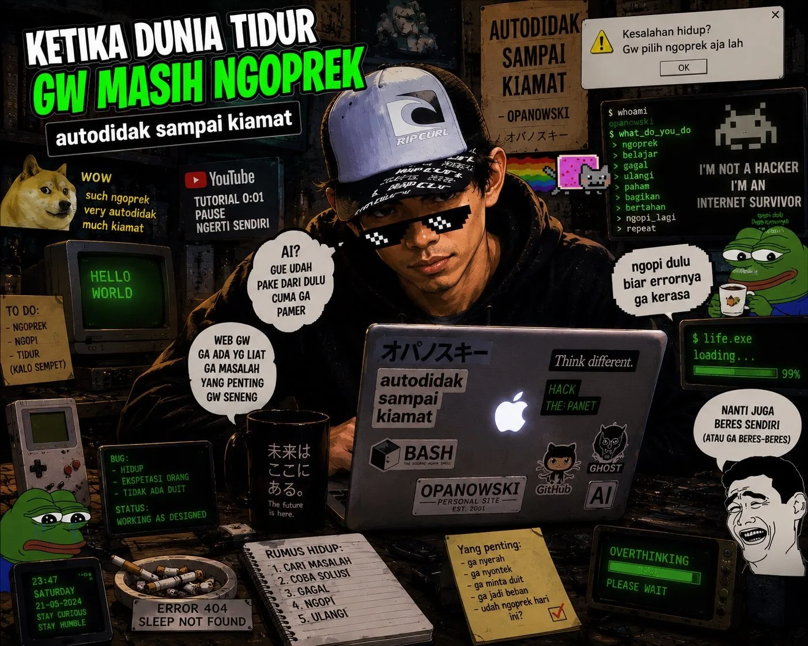
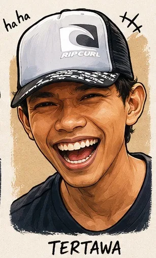
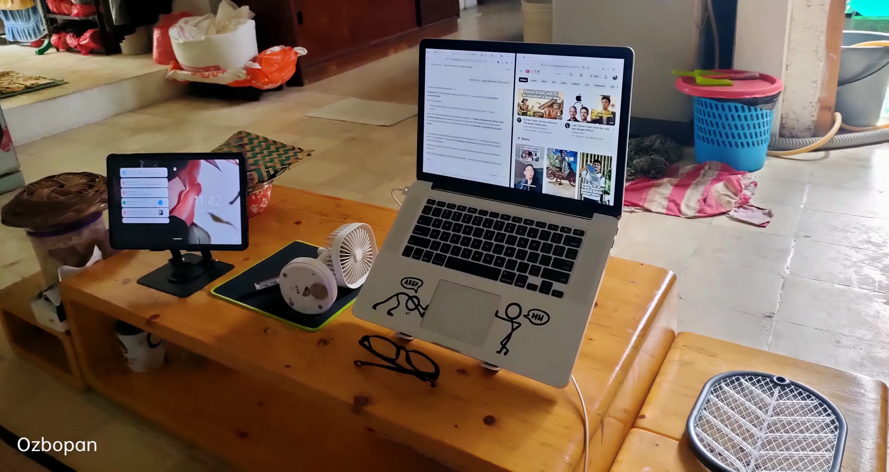

Belakangan ini banyak bener orang di sekitar gw yang pada heran dan geleng-geleng kepala. Mereka ngeliat gw lagi aktif-aktifnya ngulik ini-itu di Bunker. Di usia yang udah masuk setengah abad ini, kok semangat gw malah makin membara kayak anak muda baru lulus kuliah?
Mungkin dalam pikiran mereka, umur segini mah udah waktunya tinggal nikmatin hidup aja — duduk santai di teras, ngopi, ngapain juga cape-cape mikir keras pake segala nyusun kode dan draf konten?
Loh, justru pemikiran kayak gitu yang salah besar! Bagi gw, rutinitas ngulik dan mikir begini itu bagian dari senam otak yang paling mujarab, dan terbukti ampuh bikin gw tetep awet muda luar dalem. Lagipula, ada satu hal mendasar yang mereka ga paham: semua yang gw lakukan di sini murni buat "FUN" aja.
Gw ga punya beban harus kejar target monet, ga peduli ma tren yang bikin FOMO, ataupun butuh validasi dan pujian dari orang lain. Gw adalah bos di kebun dan di Bunker gw sendiri — jadi ya merdeka!

"Usia setengah abad bukan alasan buat berhenti. Justru ini waktunya gas pol, karena sekarang gw tau persis mau ngapain dan kenapa!"
Mutasi Jabatan Gadget di Bunker Opanowski
Kalau diingat-ingat, sejak gw mutusin buat mulai jadi konten kreator digital sekitar 3 minggu yang lalu, semua ritme kerjaan dan cara gw menghandle si Mac jadul langsung berubah total. Tadinya laptop ini cuman ditaruh di meja buat nemenin santai sambil nonton YouTube doank. Tapi sekarang? Si Mac jadul terpaksa turun gunung, kena wajib militer, dan menjelma jadi mesin pekerja keras!
Efek sampingnya gokil — gw malah jadi jarang banget nonton YouTube-nya. Hahahha.

Hebatnya lagi, ga cuman Mac doank yang kerja rodi. Semua gadget lama yang ada di Bunker langsung kebagian tugas pokok dan fungsinya masing-masing tanpa terkecuali:
Filosofinya simpel: kalau di HP lawas spek rendah aja tampilannya aman dan enteng, berarti optimasi web gw sukses besar!

"Di luar sana orang pada bayar ratusan ribu buat AI berbayar biar kelihatan canggih. Gw? Ketik draf di Google Docs, copas manual ke .txt. Gratis, bebas, dan justru bikin puas!"
Ada Robot Kutub Utara Mampir ke Web Gw!
Nah, ini cerita paling gokil dari pagi ini. Di tengah kendala koneksi wifi yang cuman 10Mbps, gw iseng ngecek data Google Analytics. Dan ternyata — website yang gw rakit pake keringat sendiri ini udah melanglang buana tembus ke ujung dunia.
Pas gw buka bagian "Pengguna aktif menurut Kota" dalam laporan 28 hari terakhir, di bawah daftar penonton dari Jakarta (25 orang aktif), Singapura, Bandung, dan Depok, terselip satu nama kota yang bikin gw langsung jeli:
Kota di pesisir utara Swedia yang letaknya udah masuk wilayah sub-arctic, tinggal sepelemparan batu nyampe ke garis Lingkar Kutub Utara. Dan di sinilah markas raksasa Data Center milik Meta (Facebook) berada.
Artinya apa? Setiap kali gw rajin nge-share link website atau draf konten baru ke Facebook Pro, Threads, atau Instagram — robot otomatis (crawler) milik Meta langsung terbang dari server pusat mereka di Luleå, Swedia, buat mampir dan meriksa web gw di GitHub Pages.

Malahan, kalau ditarik lebih jauh lewat proyek GitHub Arctic Code Vault — seluruh kode dan draf tulisan kita bakal disimpan di dalam bunker es sedalam 250 meter di Svalbard sana biar awet sampai 1.000 tahun ke depan. Gila ga tuh?

"Meskipun cuman modal wifi 10Mbps di Ciracas dan gadget serba jadul — web gw udah bisa sampe ke ujung arctic. Server canggih di kutub utara sana tiap hari sibuk mantau kerjaan orang Ciracas... Hahahha gokil!"
Kesimpulan: Inilah Arti Menikmati Hidup
Jadi buat orang-orang yang selama ini pada heran ngeliat kesibukan gw — inilah cara gw menikmati hidup yang sesungguhnya di usia setengah abad.
Menikmati hidup itu bukan berarti kita pasif, males-malesan, dan ngebiarin otak kita berhenti berputar sampai akhirnya tumpul.
Menikmati hidup yang bener itu adalah ketika kita punya kebebasan penuh buat ngulik apa aja yang kita suka, bebas berkreasi sesuka hati, tanpa harus stres mikirin tuntutan standar dan tekanan dari orang lain. Selama itu bisa bikin hati bahagia dan "FUN" — ya gas pol rem blong, jangan kasih kendor!

"Tetap waras, tetap ngulik, dan jangan pernah berhenti senam otak. Salam hangat dari kehangatan Bunker Ciracas buat dinginnya es Kutub Utara!"
🧠 Senam Otak Itu Gratis & Bikin Awet Muda
Usia setengah abad bukan finish line — itu cuma kilometre tengah dari perjalanan panjang. Selama otak masih mau diajak ngulik, selama tangan masih mau ngetik, dan selama ada hal baru yang bikin penasaran — itu artinya kita masih hidup sepenuhnya.
Dan kalau sampai robot Meta dari kutub utara mau repot-repot mampir ke web kita yang dibangun pake modal seadanya dari Ciracas — itu tandanya kerjaan kita udah di jalur yang bener. 🧊
Suka tulisan kayak gini? Mampir ke portal atau dukung Bunker buat tetap jalan! ☕